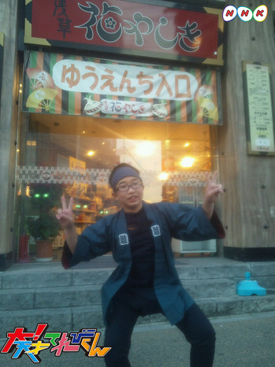
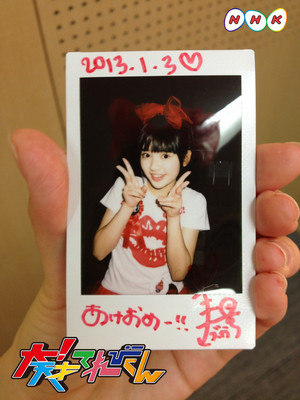

<<2013年1月 | トップページ | 2013年3月>>
2013年2月
【もうすぐ春ですね】延命杏咲実
こんこんこんにちは☆→電波ミルクさんのまねです。
あらためまして、延命です！
さて、春になってやってみたい事は、お花見です！
なんか、さくらの下でごはんを食べるのが楽しそうだからです♪
お話もすすむと思うし・・・
ちょっとドラマチックな感じだし・・・
笑顔になりそうだし！→楽しくてです♪
そんな、とっても楽しいお花見で１日をすごしたいです。
投稿者:延命杏咲実 | 投稿時間:18時00分 | カテゴリ：We are 大天才テレビジョン | 固定リンク


 " title="ソーシャルブックマークについて">
" title="ソーシャルブックマークについて">
※NHKサイトを離れます。
【もうすぐ春ですね】ソーズビー航洋
みなさんこんにちは！KOYOです！
もうすぐ春ですね～。…。
僕は、小学校の卒業式もあり、中学校の入学式もあるので、
悲しいようなぁー…嬉しいようなぁて…
なので！1番やりたい事は、中学校の友達作りです！
僕は、人見知りが激しく初々しい方とは話しにくい性格なので…
明るく！(((o(*ﾟ▽ﾟ*)o)))
上品に！（￣+ー￣）
礼儀正しく！(__)
元気に！（≧∇≦）
笑顔で！(￣▽￣)
友達を作って行こうと思います！
以上！KOYOでしたー^ ^
ちなみに上の写真は、ソーズビー中学校で使う予定の筆箱だそうです。
投稿者:ソーズビー航洋 | 投稿時間:18時00分 | カテゴリ：We are 大天才テレビジョン | 固定リンク
" title="ソーシャルブックマークについて">
※NHKサイトを離れます。
【乗りすけFile】 No.63：犬ぞり（2月26日放送）

全長：2m60cm
全高：95cm
全幅：50cm
重量：10kg
価格：20～30万円
北極圏やアラスカなど、寒冷な土地帯で人や物を運搬する手段として使用されてきた、犬が牽引するソリ。日本でも冬のドッグスポーツとして人気で、各地でレースが開催されている。ソリを引く犬は耐寒性と持久力に優れた中型のハスキー犬が主流。１頭から２０頭以上まで、状況に応じて頭数を変更する。知恵と勇気を兼ね備えたリーダー犬を先頭に、力持ちの犬はソリの最も近くに配置される。７頭引きの場合、最大積載量は100kg以上、最高時速は約40kmに及ぶ。
ソリはカーボン製で重量約10kg。前部には、ケガをしたり疲労した犬を乗せて運ぶドッグバッグが搭載されている。
これまでの【乗りすけFile】はこちら
投稿者:大天才テレビジョン社員１号 | 投稿時間:18時44分 | カテゴリ：乗りすけさん | 固定リンク
" title="ソーシャルブックマークについて">
※NHKサイトを離れます。
【もうすぐ春ですね】金子隼也
隼也です！
春にやりたい事は、満開の桜を見ながらお花見をすることです！
でも、花より食べることに集中しちゃうんですけどね・・・（笑）
とにかく満開の桜を見ながらご飯が食べられれば十分です！
ちなみに花粉症なのでマスクは必需品です！（笑）
投稿者:金子隼也 | 投稿時間:18時00分 | カテゴリ：We are 大天才テレビジョン | 固定リンク
" title="ソーシャルブックマークについて">
※NHKサイトを離れます。
ＭＴＫ「アナコンダ・ラヴ▽」 裏話大公開
みなさんこんにちは！大天才テレビジョン 広報のもっちーです(*uωu*)σ
現在放送中のＭＴＫ、寺田朱里＆ＲＯＬＬＹの「アナコンダ・ラヴ▽」（▽＝ハートマーク）はご覧いただけましたか？
朱里の「は虫類に対する愛」をテーマに、１月放送の「ヒット番組への道～ロック魂でヒットをねらえ！」にも
ご出演いただいたＲＯＬＬＹさんに、作詞作曲していただきましたo(*’▽’*)/☆ﾟ’
今日はこの曲の裏話を書こうと思います～。
その1
すでに気付いている方も多いとは思いますが、、
オープニングのリフは、20年前「天才てれびくんシリーズ」がスタートしたときの
1993年「天才てれびくん」エンディングテーマ曲、すかんち『ＹＯＵ ＹＯＵ ＹＯＵ』のリフと同じものなんです！！！
20年前に天てれを見ていたお父さん、お母さん、おじいちゃん、おばあちゃん、おにいさん、おねえさん・・・
気付きましたかヾ(ﾟ∀ﾟゞ)
その2
実は、この曲の原案を書いたのは…寺田朱里本人なんです。
原案となった紙をここで特別に公開しちゃいます！

ＭＴＫ制作スタッフから「 “は虫類に対しての気持ち”を文章にしてきて」と伝えたら、
朱里からこの紙が送られてきたそうなのですが・・・
このルーズリーフに走り書きされた朱里の、なんだかよくわからない文章から、あんな名曲が生まれるとは…
やっぱりＲＯＬＬＹさん、すごいです (*≧д≦)！！
「アナコンダ・ラヴ▽」明日、明後日も放送します！ぜひご覧くださいませませ～
大天才テレビジョン 広報 もっちー
投稿者:もっちー＠大天才テレビジョン広報室 | 投稿時間:20時40分 | カテゴリ：お知らせ！ | 固定リンク
" title="ソーシャルブックマークについて">
※NHKサイトを離れます。
【ドウブツカメラ！】「金運を呼ぶヘビを撮る」（撮影：朱里・黒澤）
２月２５日（月）放送 『金運を呼ぶヘビを撮る』
今回の動物カメラマンは、寺田朱里と黒澤美澪奈。
２人が撮ったベストショットはこちら！
※画像をクリックすると大きな画像が開きます。
また、開いた画像を右クリックすると保存ができます。
撮影：寺田朱里 『金運を呼ぶ 円』
撮影：黒澤美澪奈 『舌を出せば金が出る』
ロケ中のオフショットはこちら！
投稿者:大天才テレビジョン社員１号 | 投稿時間:19時30分 | カテゴリ：お知らせ！ | 固定リンク
" title="ソーシャルブックマークについて">
※NHKサイトを離れます。
【乗りすけFile】 No.62：スノーボード（2月25日放送）


全長：1m54cm
全高：約10cm
全幅：29cm
重量：約４kg
定員：1名
価格：9万8700円
上に乗って雪上を滑るためウインタースポーツに用いるボード。上級者はジャンプや回転技など多彩なトリックを楽しむことができる。
専用ボードは厚さ約１㎝、バインディングでブーツごと足を固定し、斜面を滑走する。ボードのエッジはわずかに弧を描いており、エッジを雪面に押し当てることで左右に旋回(ターン)することができる。速度の調整もターンによって行う。エッジは鉄製で固い雪面にも対応。
ボード本体は木製で重量は約４kg。耐久性向上のため表面をグラスファイバーでコーティング。裏面は摩擦が少なく水はけの良いポリエチレン性となっている。
これまでの【乗りすけFile】はこちら
投稿者:大天才テレビジョン社員１号 | 投稿時間:18時49分 | カテゴリ：乗りすけさん | 固定リンク
" title="ソーシャルブックマークについて">
※NHKサイトを離れます。
【もうすぐ春ですね】寺田朱里
やっほーのほーーーいっ！！！
春は春夏秋冬の中では、そこまで好きじゃないよ！
でも春は色どりがあざやかな洋服がいっぱいあるから、カラフルな洋服が買いたいなぁー！
でも、やっぱ春といえばお花畑！！！！
お花畑にうもれてみたいなぁっー！！！
きっといい匂いがするとは思うけど、虫がうじゃうじゃだね！！！
それはやめてほしいなぁー！
ということで春はお花畑にいきたいなぁっ！！！
行こーーーっと！！
ふっふふーーーーん！
投稿者:寺田朱里 | 投稿時間:18時00分 | カテゴリ：We are 大天才テレビジョン | 固定リンク
" title="ソーシャルブックマークについて">
※NHKサイトを離れます。
【もうすぐ春ですね】岡田結実
春は春はいっぱいやる事があるから大変なんですよ！
卒業式があって終わったあとは入学式ですよ！
もう中学１年生なんですよ(＾▽＾)
てれび戦士みんなに「みえない！！」って言われて悲しいんですよ 笑
でももう中学生だから、入学式では、友だちをいっぱーい作れたらいいなと思います。
でも中学になったら宿題や勉強が大変だからいやなんですよ（笑）
でもあまえてらんないからがんばります。
あと、せいふくも楽しみなんですよー！
いっぱい種類があったからいっぱいコーデできるから楽しみです！☆
では、岡田結実、中学生にがんばってなりまーす 笑！
がんばりまーす。
春の話から中学の話になってすみませーん^^;
投稿者:岡田結実 | 投稿時間:18時00分 | カテゴリ：We are 大天才テレビジョン | 固定リンク
" title="ソーシャルブックマークについて">
※NHKサイトを離れます。
【２０１X年バレンタイン理想の告白】鈴木あきえ
あと5年後にはちょうど30歳なので、
理想の三十路バレンタイン告白を綴りたいと思います♪
三十路にもなるとかなりの大人の女性なので
大人の色気を醸し出し、
ラム酒とかブランデーとかお酒入りのチョコレートを手作りします☆
そしてそれを渡しつつ、
『結婚を前提にお付き合いして下さい！！！』
と、まさかの逆プロポーズまがいの告白をして、
彼のハートをゲッチュしてみせます（笑）
………てか三十路になっても独身なのかが、1番の問題です(**∀**)ノ
写真はギャラクシー刑事大人担当。25歳独身なう。
投稿者:鈴木あきえ | 投稿時間:18時00分 | カテゴリ：We are 大天才テレビジョン | 固定リンク
" title="ソーシャルブックマークについて">
※NHKサイトを離れます。
【乗りすけFile】 No.61:圧雪車（2月20日放送）


全長：8m49cm
全高：2m79cm
全幅：4m90cm
重量：5300kg
定員：2名
価格：約3500万円
スキー場のゲレンデ整備を行う大型の雪上車。新雪を踏み固めてコースを快適に保つ。
上下左右に振動する「排土板」で雪面を平らに削った後、後部の「スノーミル」でさらに細かく砕き、ゴム製のフィニッシャーで押さえ込んで平らに仕上げる。圧力の強弱も調整が可能。
キャビンのすべての窓には、付着した雪やくもりを除去して視界を確保するために熱線が仕込まれている。さらに、車内からも暖房で暖めるため室内はたいへん暑い。
安全重視のために作業時はすべてのライトを点灯。回転灯や拡声器も用いて、周囲に注意喚起しながら走行する。約8000ccもの排気量を誇る大型のディーゼルエンジンをキャビン下に搭載。平均作業速度は約30km/h。
これまでの【乗りすけFile】はこちら
投稿者:大天才テレビジョン社員１号 | 投稿時間:18時42分 | カテゴリ：乗りすけさん | 固定リンク
" title="ソーシャルブックマークについて">
※NHKサイトを離れます。
【２０１X年バレンタイン理想の告白】山田陶子
バレンタインは、女子から男子に渡すけれど、
やっぱり、男子からの方がいいなあ・・・・・。
だけど、自分が、男子だとしたら、
漫画でよくあるような、下駄箱を開けたら、
ダダダダダ～！！！って、
チョコが流れ落ちてくるみたいな、バレンタインが理想です。
漫画で、そういうのよくあるけど、実際そういうのってないですよね・・・。
残念だな・・・・。
やはり、漫画は漫画ってことですかね・・・。
残念だな・・・・。
そんな感じで、私（男の子だったら）の理想のバレンタインでした(；一_一)。
なぜか、お兄ちゃんの学ランで男らしさを表現したら、応援団長風になっちゃいました(・_・;)
投稿者:山田陶子 | 投稿時間:18時00分 | カテゴリ：We are 大天才テレビジョン | 固定リンク
" title="ソーシャルブックマークについて">
※NHKサイトを離れます。
【乗りすけFile】 No.60：スノーモービル（2月19日放送）

全長：2m85cm
全高：1m17cm
全幅：97cm
重量：167kg
定員：1～2名
価格：約70万円
積雪地帯で移動するための小型雪上車。オートバイに似た姿勢で乗車する。スキー場でのパトロールやモータースポーツなど、幅広く使用されている。
前部の２本のソリと後部中央のクローラによる３点で自立するため、オートバイよりも転倒しにくく、比較的容易に操縦が可能。車体の前後には振動を吸収するサスペンションを搭載している。排気量が100cc程度の小型のものから1000ccを越える大型のものまでさまざまな機種が存在する。番組で紹介したスノーモービルは中型で排気量300cc、最高速度約90km/h。左右のグリップとアクセルレバーには、手を暖めるための熱線が内蔵されている。
これまでの【乗りすけFile】はこちら
投稿者:大天才テレビジョン社員１号 | 投稿時間:18時44分 | カテゴリ：乗りすけさん | 固定リンク
" title="ソーシャルブックマークについて">
※NHKサイトを離れます。
【２０１X年バレンタイン理想の告白】鎮西寿々歌
はろろーん
冬の女王こと、寿々歌です(^ ^)
んー、理想の告白…。
そーだな。
バレンタイン当日
チョコは渡さない。
男子はきっと、14日に貰えると思ってるから、その日はあえて避けるのです！
そして…次の日
貰うと思ってない相手に
放課後、後ろから驚かしてからの…
チョコプレゼント?
どうですか？(^ ^)
みんなも試してみてね♪
うちにも試せる日がくるのか…。
うちからのチョコ欲しい人ーっ☆笑
コレは去年作ったものです♪
逆っていうね…笑笑
投稿者:鎮西寿々歌 | 投稿時間:18時00分 | カテゴリ：We are 大天才テレビジョン | 固定リンク
" title="ソーシャルブックマークについて">
※NHKサイトを離れます。
【２０１X年バレンタイン理想の告白】延命杏咲実
こんにちは。延命です。
これは私が１５才（中３）の時のお話です。
明日はバレンタイン！
今年は気になっている男の子がいるから、
がんばってチョコ作るぞ～☆
よく日・・・やった～！来ました！バレンタイン！
「ほうか後、◯◯公園で待っててネ☆」って
きのうメールで送ったから、大じょうぶでしょ！
ほうか後・・・よし、できるぞ！私ならできるぞ！って自分でかたりかけて、
カレの所に行って・・・「ねぇ！」って声かけて、
私はこう言った、チョコを出してと・・・。
「あの・・・私、◯◯君の事がすきです！正じきでいいんですよ！正じきで！！
あの・・・この気持ち・・・受けとってください！！」
やっぱり、こいはストレートに行くが勝ちでしょ☆
そしたらカレが「ぼくも気になってたんだ！正じきに気持ち受けとるよ！」
って言ってくれて・・・本当に幸せ♪♪♪
お話は終わり。
みなさんも、ストレートこくはくじゅつ、使ってみてくださいね。
投稿者:延命杏咲実 | 投稿時間:18時00分 | カテゴリ：We are 大天才テレビジョン | 固定リンク
" title="ソーシャルブックマークについて">
※NHKサイトを離れます。
【２０１X年バレンタイン理想の告白】ソーズビー航洋
こんにちは！
ぼくの理想の告白は…
手作りチョコで、ハート型がいいです！
夕日が沈む公園で…
2人っきりな感じで…
こうカップルに間違われるんじゃないかくらいの勢いで
2人で遊んでて、疲れたねー的な感じで、ベンチに座って、
「…あのね！」って感じで始まって、
遠回しにじゃなくて、がっつりって感じで告白されたいです^ ^
気持ちを伝えられたあとは、また遊んで、
言われる前よりちょっとラブラブなかんじで遊んで、
ちょっといしきし合う的な感じが理想です！
あまり豪快って言うのは好まないです笑
なんか2人っきりて言うのがいちばーーーん理想です♪
ちなみにあまりぼくはもてません^ ^;笑
それでは！
投稿者:ソーズビー航洋 | 投稿時間:18時00分 | カテゴリ：We are 大天才テレビジョン | 固定リンク
" title="ソーシャルブックマークについて">
※NHKサイトを離れます。
【２０１X年バレンタイン理想の告白】寺田朱里
ふっふふーん。もう・・・こんな時期なのね・・・。
バレンタイン！！！
楽しみなような、そうでもないような。
とりあえず手作りチョコを大量生産しなくちゃー！！
みんなは告白するのかなぁー！？笑
告白の仕方っていっぱいあるけど、やっぱり学校の放課後っていいよね～！！！
放課後に残って・・・。２人きりの教室で世間話をしながら楽しく会話して～。
それでそれで～！バレンタインだからチョコあげるねって言って～。
それ本命だからね～って言って・・・。キャー！！！
青春だねぇ～・・・青春っぽい告白がしたいなぁー！
６年後にやろう！！笑
みんな告白頑張ってねー！！！
きゃぁーぁぁーぁぁぁーぁぁぁ！！
投稿者:寺田朱里 | 投稿時間:18時00分 | カテゴリ：We are 大天才テレビジョン | 固定リンク
" title="ソーシャルブックマークについて">
※NHKサイトを離れます。
【乗りすけFile】 No.59：競技用ボート（2月13日放送）


全長：13m
全高：45cm
全幅：50cm
重量：55kg
定員：5名
価格：約250万円
スピードを追究した人力のボート。１人用から８人用まで、漕ぐ人数ごとの種類がある。船体は安定性よりもスピードを重視した細長い構造となっている。ボディはカーボン製。
漕手（そうしゅ）は１人１本のオールを担当。前後にスライドするシートに後ろ向きに着席し、全身を使って漕ぐ。腕よりも太ももの筋肉を使うのがポイント。
乗船員の中で１人だけ前を向いている舵手（だしゅ）が、船尾の舵も操作しながら、漕手が息を合わせて漕げるように指示を出す。
ボート競技の花形であるエイト(８人漕ぎ)は、漕艇競技の最高速艇。最高速度は約22km/hにも達する。
これまでの【乗りすけFile】はこちら
投稿者:大天才テレビジョン社員１号 | 投稿時間:18時42分 | カテゴリ：乗りすけさん | 固定リンク
" title="ソーシャルブックマークについて">
※NHKサイトを離れます。
【２０１X年バレンタイン理想の告白】竹原司
２０１X年２月１４日・・・。あれは、雨の日でした。
昼からのとつぜんの雨で、学校では、
おりたたみのかさをもってきている人はおりたたみがさで、
持ってない人は学校から、かさをかりて帰っていました。
そしたら、もうかさがないと学校の先生たちが言い出して
しかたなく◯◯さんはかばんを頭にかかえて帰ろうとしていました。
僕はそれを見て、「かさ・・・・・いる？」とききました。
そしたら、「うん」と言ってかさの中に入って来ました。
それが僕の初あいあいがさかもしれません。
そして僕は◯◯さんの家の方向に歩き出しました。
・・・・・しばらくの間、まったくしゃべりませんでした。
そして◯◯さんの家の前に着きました。
すると、◯◯さんが、
「あたし今日チョコ作ったんだよね。・・・・・・いる？」ときかれました。
「うん、いる。」と僕は言いました。
そしてもらったら家に帰りました。
そして中を見てみると、チョコは入ってませんでした。
でも手紙が入っていました。
終！！
（このさきの出来事や手紙の内容は皆さんが考えてください！
僕がこれ以上書くと本当におきてほしいと願ってしまいそうなので
やめておきます！
それでは、さようなら！）
投稿者:竹原司 | 投稿時間:18時00分 | カテゴリ：We are 大天才テレビジョン | 固定リンク
" title="ソーシャルブックマークについて">
※NHKサイトを離れます。
【２０１X年バレンタイン理想の告白】長谷川ニイナ
誰もいない公園。
今日は、このチョコを渡します。
このチョコには「好き」と書いてあるけど、口に出しては言わないんです。
だって、バレたくないんだもん！
だから、このチョコはこの間の文化祭の時にいろいろ手伝ってくれた事のお礼を言って渡すようにします！！
あっあと、その場で食べてもらわなきゃ！証拠が残らないように。
「好き」いわなくても、この気持が届きますように・・・☆
今回は、もし私がバレンタインデーにチョコを渡すなら・・・
というシチュエーションで物語を書いてみました！！
渡す前のドキドキする時のシーンです！！
でも、多分私にはないなぁ、と思いながら書いているニイナでした。
チョコをつくってあげるよりも、自分で食べる方になりそうだし・・・。
まぁ、「花より団子」ですね！！
投稿者:長谷川ニイナ | 投稿時間:18時00分 | カテゴリ：We are 大天才テレビジョン | 固定リンク
" title="ソーシャルブックマークについて">
※NHKサイトを離れます。
【２０１X年バレンタイン理想の告白】金子隼也
隼也です！
バレンタインに貰うとしたら学校以外が良いです。
学校だと周りに色々言われたりするのであんまり学校でもらうのは好きではないです。
どちらかというと誰もいないところでこっそり貰いたいですね(笑)
それはそれで緊張したりするんですけどね。
とにかくまだまだ恋愛には程遠い僕でした！
投稿者:金子隼也 | 投稿時間:18時00分 | カテゴリ：We are 大天才テレビジョン | 固定リンク
" title="ソーシャルブックマークについて">
※NHKサイトを離れます。
【２０１X年バレンタイン理想の告白】黒澤美澪奈
こんにちは(o>ω<o)
みれなです！
みれなが、高校生になって初めてのバレンタインデーのお話です…
部活に、３年生の成績優秀でスポーツ万能の先輩がいて、
みれなは、ずーーっと憧れていました。
２月になって先輩の大学進学が決まって
「先輩がもうすぐ卒業しちゃう！
今年じゃないと、もうわたせない！」
と思ったみれなは、
勇気を出して、先輩のために一生懸命チョコレートを作りました。
そして、 バレンタインデーの日
先輩にチョコレートをわたそうと思って、
グラウンドにいる先輩のもとに走っていったら、
先輩の１ｍ手前で転んでしまいました。
私がひざをケガして、痛そうにしていると
先輩が「大丈夫？」と優しく手をさし出してくれました。
私は、その先輩の手にチョコレートを渡すと、
全速力で逃げていくのでした…
☆おしまい☆
投稿者:黒澤美澪奈 | 投稿時間:18時00分 | カテゴリ：We are 大天才テレビジョン | 固定リンク
" title="ソーシャルブックマークについて">
※NHKサイトを離れます。
【２０１X年バレンタイン理想の告白】長江崚行
バレンタイン理想の告白かー…
緊張してる人が良いですねー。
女の子らしいと感じます。
あと、クッキーにして欲しいですね。チョコ食べれないんで。(笑)
クッキーくれる人は好印象！
和菓子ならもっと好印象ですねー
煎餅と歌舞伎揚げがあれば、それだけで幸せになれる人間なんで。(笑)
ぜひ、煎餅と歌舞伎揚げ作りにチャレンジしてみてくださいな！
んbye！⊂(^_^)⊃
RYO-KI
投稿者:長江崚行 | 投稿時間:18時00分 | カテゴリ：We are 大天才テレビジョン | 固定リンク
" title="ソーシャルブックマークについて">
※NHKサイトを離れます。
【２０１X年バレンタイン理想の告白】島田太一
学校で帰る支度をしようと思ってランドセルをパカって開けたら
サプライズでチョコがはいってたぁぁー。
というドッキリ感、が満載に渡されたいです。
ホワイトデーの日も等しく、
ランドセルに入れるというドッキリ感、
満載の返し方をしたいです。(〃▽〃)

投稿者:島田太一 | 投稿時間:18時00分 | カテゴリ：We are 大天才テレビジョン | 固定リンク
" title="ソーシャルブックマークについて">
※NHKサイトを離れます。
【２０１X年バレンタイン理想の告白】岡田結実
やっぱりバレンタインは自分（女子）から
告白しないといけないんじゃないですか 笑
でも自分、シャイ？ハズかしがり屋だから、
自分から告るのはイヤなんですよ！ 笑
だから男子から「これチョコ、おまえがくれねーからおれからあげる。好きだよ☆」みたいな事言ってもらえたら最高です！
てかだれか言って下さーい 笑 (＾▽＾)で！
自分もその人の事好きだったら、ホワイトデーでチョコと一緒に返事、
好きではなかったらチョコと一緒にごめんなさいっ！って言います！
こんなゆめみたいなもうそう？そうぞうしてたら、絶対好きな人もできない 笑
だから自分がしんぱいです。
まぁ、自分にはなにもおきないバレンタインデー＆ホワイトデー 笑。
こいするみなさん、ぜひ告白がんばって下さい！
おうえんしてまーす (≧∇≦)
投稿者:岡田結実 | 投稿時間:18時00分 | カテゴリ：We are 大天才テレビジョン | 固定リンク
" title="ソーシャルブックマークについて">
※NHKサイトを離れます。
【私のお正月】鎮西寿々歌
うちは、お正月
3日からお仕事で
渋谷公会堂で行われた「新春アイドル横丁2013」というアイドルイベントにて…
人生初！
人生初の1人MCをやらさせていただきました★
めーーっちゃ緊張しました。
イベントと収録は違うけど、アッキーやボスはいつもこんな事をされているんだと、改めてすごいなと思いました。
初めの方は緊張してたけど、お客さんの顔を見ているうちに緊張がほぐれてきて、心の底から楽しむことができました★
新年早々
たくさんのアイドルさんにお会いできたし…

あーーーー！
そういえば
先輩戦士
しげもんことりさんと久しぶりに会いましたー♪
身長伸びたねーっ
って言ってもらえた(^-^)/
うっしししー♪
そしてそして…
同じ事務所の
キャラメル☆リボンも同じイベントに出演しました！
コラボ企画で一緒に歌って躍ったんです(^-^)/
楽しかったです★
2013年初めてのMC。
またしたい！と思いました♪
投稿者:鎮西寿々歌 | 投稿時間:18時00分 | カテゴリ：We are 大天才テレビジョン | 固定リンク
" title="ソーシャルブックマークについて">
※NHKサイトを離れます。
【私のお正月】山田陶子
冬休みに入ってからは～♪
相変わらず、お兄ちゃんのサッカーに付き合ってのグラウンド生活でしたね。
寒いけど、ずっと外で、他のお兄ちゃんにくっついてきた妹や弟たちで遊ぶんです♪
Ｓボー、バスケットボール、ローラースケート、縄跳び、バドミントン・・・。
後は、木や葉っぱや、崖や、自然の遊びものは、沢山あるので、ずっとずっと、遊んでます。
帰りの車は、毎回、爆睡です（笑）
新年になってからは～♪
一日は、パパのおじいちゃん家行って、ＴＶみてゴロゴロ・・・・・。
二日は、初詣で行って、ママのおじいちゃん家行って、ＴＶみてゴロゴロ・・・。
三日は、お家で、ＴＶみてゴロゴロ・・・。
四日は、やっぱり、ＴＶみてゴロゴロ・・・。
五日は、塾いった・・・そのあとＴＶみてゴロゴロ・・・。
ずっと、ＴＶみてゴロゴロ・・・。
お正月って、ご馳走並ぶじゃないですか・・・。
で、食べ続けて、ＴＶみてゴロゴロゴロゴロ・・・。
太りました(T_T)
投稿者:山田陶子 | 投稿時間:18時00分 | カテゴリ：We are 大天才テレビジョン | 固定リンク
" title="ソーシャルブックマークについて">
※NHKサイトを離れます。
【私のお正月】寺田朱里
やっほっほーん♪
みんなげんきー？
私は元気ーーっ！
今年の大晦日はね！
すき焼きを食べたの！
それで夜胃もたれになっちゃった！いやーん
それでね～！家族で一番早く寝たのはお母さんなんだけど、一番遅かったのは私なのー！♪
テレビとメールをダブルでしてたら4:33くらいになっていてびっくりしたあ！
それからはぐっすり寝たよん！
あと学校の友達とで雪だるま作ったり～♪
素手で作ったから手がかちこち～
太一のあるある話をいっぱい聞かせてもらったのー！
太一おもしろいね！
補足なんだけどね～
私お正月におもち食べない人なんだー笑
お母さんとかは食べてるけどねん！
巳年だああーー！
へびだいすきーー！！
あいしてるーー！
投稿者:寺田朱里 | 投稿時間:18時00分 | カテゴリ：We are 大天才テレビジョン | 固定リンク
" title="ソーシャルブックマークについて">
※NHKサイトを離れます。
ページの一番上へ▲